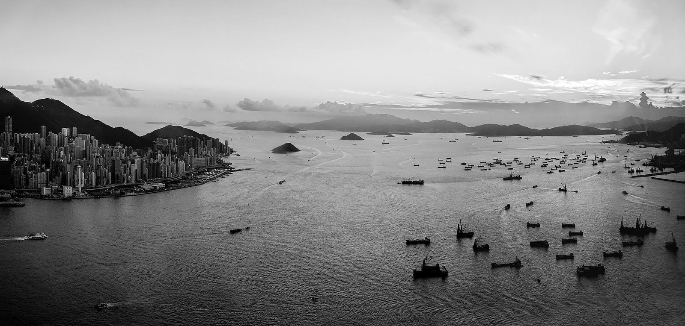

Photographie · {{YEAR}}
La ville,
défiler
La ville,
la nuit, le silence.
Des séries patientes sur les lieux que l'on traverse sans les voir : les passages, les ponts, les heures bleues.
Des séries patientes sur les lieux que l'on traverse sans les voir : les passages, les ponts, les heures bleues.





« Photographier, c'est mettre sur la même ligne de mire la tête, l'œil et le cœur. »— une phrase que l'on garde au mur de l'atelier